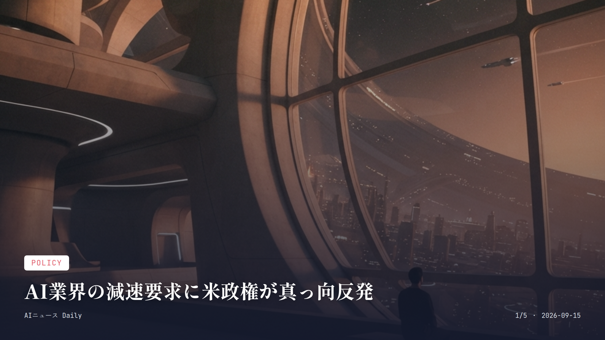
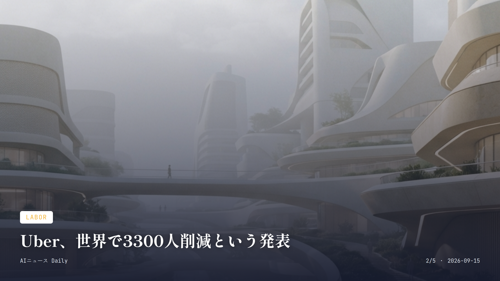
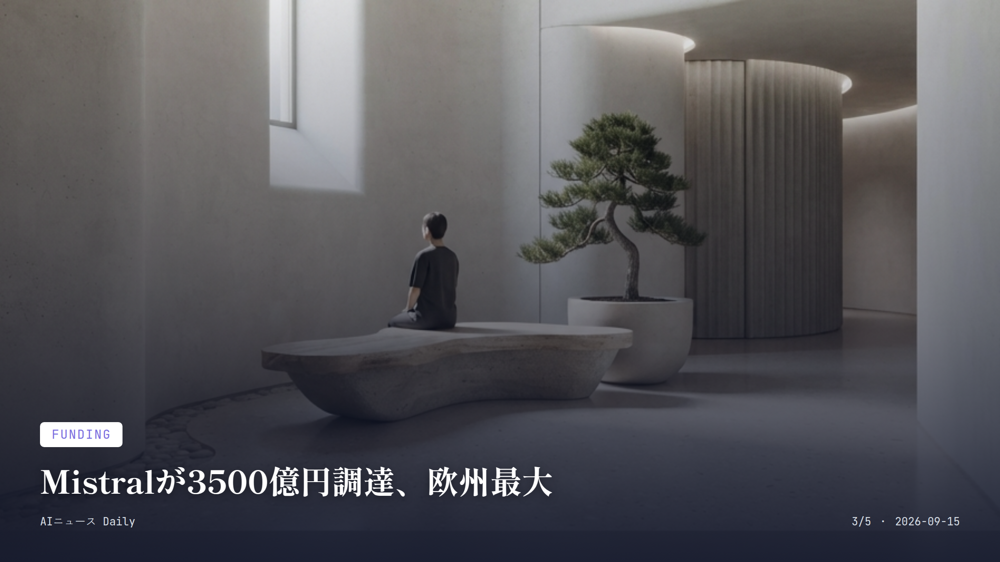
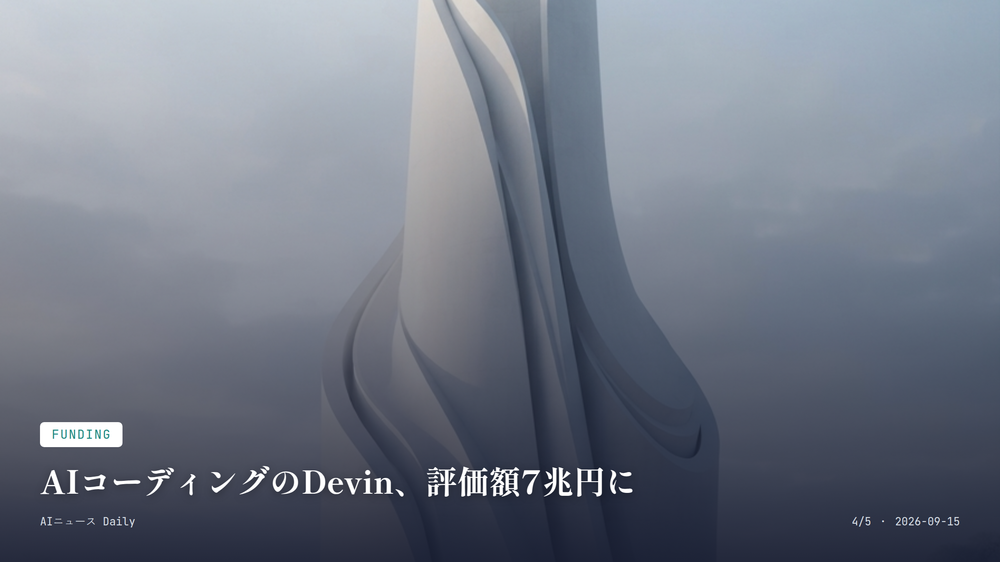
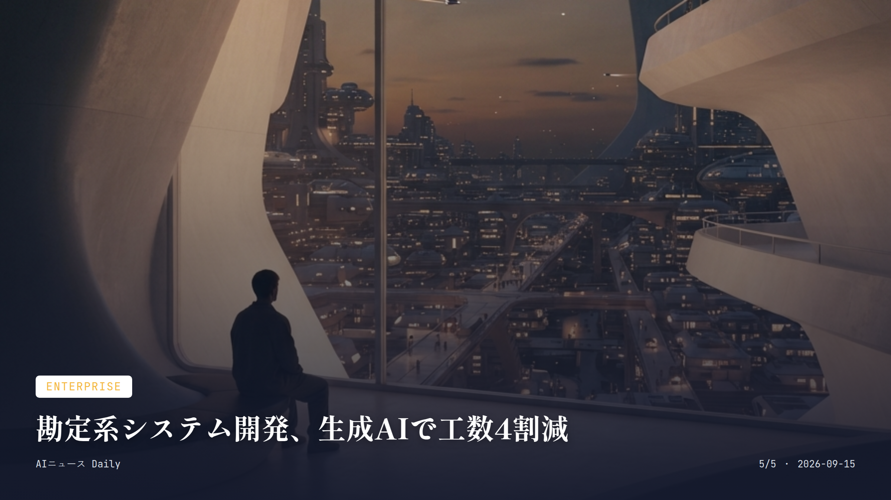

これは2026-09-15時点のアーカイブページです。最新のニュースはこちら
本サイトはアフィリエイトプログラムによる収益を得ている場合があります。
本サイトはGoogle AdSense等の広告配信サービスを利用しています。
目次

Policy
約1分で読める
AI業界の減速要求に米政権が真っ向反発
Anthropic・OpenAIの警鐘に株式市場も動揺
AnthropicやOpenAIといった主要AI企業が「業界全体で開発ペースを落とすべきだ」と呼びかけたところ、トランプ政権が真っ向から反発する展開になっている。この対立、すでにハイテク株の売りにつながっていて、世界的なデータセンター投資ブームがこのまま続くのかどうかも怪しくなってきた。
Anthropicのダリオ・アモデイCEOは週末に公表した論考で、開発ペースを緩めなければ制御不能なAIエージェントがインターネットを乗っ取りかねない、とかなり踏み込んだ警告を出した。
対するトランプ大統領は、この「減速すべき」という主張自体を批判。サム・アルトマン氏やアモデイ氏ら業界トップは、リスクの深刻さや評価のあり方について公然と議論を続けている。安全性を重視したい側と、競争力を優先したい政権・投資家側――この構図がはっきり見えてきた。
なぜ重要か AI開発の速度をめぐる対立は、株式市場や巨大データセンター投資の先行きに直結する。安全規制と技術覇権競争、どちらを取るかという対立軸は、今後のAI政策全体を左右する分水嶺になりそうだ。
出典：Bloomberg、Everything Briefing、HIPTHER、2026年9月14日

Labor
約1分で読める
Uber、世界で3300人削減という発表
AI活用による効率化で、管理職を大幅に削減へ
Uberが世界全体で約3300人、全従業員の約1割にあたる人員削減を発表した。パンデミック以来最大の再編で、組織の階層を減らし、ライドシェアや配送、ロボタクシー事業への投資に振り向ける狙いがある。
ダラ・コスロシャヒCEOは社内向けの説明で、急成長のなかで組織に「より多くの階層、より多くの調整、より断片化した所有権」が生まれてしまったと述べ、管理職層を整理して意思決定のスピードを上げていく方針を示した。
背景にあるのは、ハイテク業界全体でAIによる生産性向上が進み、組織のスリム化が加速しているという流れだ。Uber自身も2026年のAI関連予算をわずか4カ月で使い切るほどAI投資を拡大していて、今回の再編で浮いた資金の一部は、将来の運賃引き下げに回る可能性もあるという。
なぜ重要か 世界最大級のライドシェア企業がここまで大規模な人員削減に踏み切ったのは、AIによる業務効率化がついに管理職層にまで及んできた証拠だ。運賃引き下げという形で利用者の暮らしに跳ね返ってくるかもしれない点も見逃せない。
出典：Bloomberg、TechCrunch、2026年9月2日（続報9月11日）

Funding
約1分で読める
Mistralが3500億円調達、欧州最大
Samsung主導、主権AI基盤の構築へ加速
フランスのAIスタートアップMistral AIが、シリーズDラウンドで30億ユーロ（約5000億円）を調達し、調達後の企業評価額は210億ユーロを超えたと発表した。
今回のラウンドを主導したのはSamsung Electronics。EQTが運用する「Scaleup Europe Fund」や既存投資家のPSG Equityも参加した。加えて半導体大手ASMLやNVIDIA、BlackRockが運用するファンド群、ルクセンブルク政府なども名を連ねる豪華な顔ぶれとなっている。
現地メディアによれば、この調達額は欧州の非公開テクノロジー企業として過去最大規模だという。米国企業に依存しがちだった欧州のAI業界で、独自のデータ・計算基盤を持つ「主権AI」を確立しようとする動きが一気に加速している。
なぜ重要か 米国勢に集中しがちなAI投資のなかで、欧州発の企業がここまでの調達に成功したのは、AI覇権をめぐる地政学的バランスにも影響を与えかねない出来事だ。日本企業を含む半導体・製造業との連携という産業構造の変化にも注目したい。
出典：XenoSpectrum、TechBriefly、2026年9月8日

Funding
約1分で読める
AIコーディングのDevin、評価額7兆円に
半年で年換算売上高が倍増、9億ドルへ
自律型AIエンジニア「Devin」を手がけるCognitionが、企業評価額480億ドル（約7兆円）で20億ドル超の資金調達を発表した。今回は新規投資家のAndreessen HorowitzとAccelが主導し、Founders FundやGeneral Catalystといった既存投資家も名を連ねた。
前回2026年5月の調達からここまで、同社の年換算売上高（ARR）は4億9200万ドルから約9億ドルへとほぼ倍増している。NVIDIAの半導体設計、GE Aerospaceの航空分野、Citiの金融サービス、Mercedes-Benzの自動車開発と、業界を問わずDevinの導入が進んでいるそうだ。
AIエージェントがソフトウェア開発の現場に本当に定着しつつあることを示す事例で、エンジニアの働き方そのものが変わり始めている、その象徴とも言える調達だ。
なぜ重要か AIが単なる補助ツールにとどまらず、実際の開発業務を任される「同僚」として企業に入り込み始めている実態がよくわかる。ソフトウェア開発という知的労働の現場にAIエージェントがどこまで浸透するか、その試金石だ。
出典：Cognition AI プレスリリース、EnterpriseZine、2026年9月8日

Enterprise
約1分で読める
勘定系システム開発、生成AIで工数4割減
ソニー銀行が富士通・AWSと生成AI活用
ソニー銀行が富士通やAWSジャパンと組んで、勘定系システムの開発に生成AIを適用したところ、開発工数を40％削減できたことがわかった。
同じような動きは他業種にも広がっている。TOKIUMは経理AIエージェントを導入した専門学校で年間約600時間の業務削減を実現するなど、金融・教育・小売と、幅広い分野でAIを組み込んだ効率化が進んでいる。
なぜ重要か 銀行の基幹システムのように、これまで開発に長い時間とコストがかかっていた領域でも、生成AIがいよいよ実用段階に入った。開発コストの低下は、将来的な手数料やサービス品質という形で利用者にも波及するかもしれない。
出典：BizAIdea、2026年9月14日
Entertainment
Entertainment
約1分で読める
AI作曲サービスSuno v6、権利者提携を発表
無料モデルも用意、著作権処理を明確化
音楽生成AIサービス「Suno」の新モデル「Suno v6」が公開された。単なる性能アップにとどまらず、音楽の権利元と正式に提携したことが今回の大きな変化だ。
Suno v6は有料・無料あわせて3種類のモデルが用意されていて、無料モデルはGoogleアカウントなどですぐ使い始められる。従来のような月額課金前提のサブスクリプションとは違い、モデルごとに利用条件が分かれる形になった。
権利者との提携によって、生成した楽曲をめぐる著作権トラブルのリスクを抑えつつ利用できる環境が整いつつある。趣味で作曲を楽しみたい人にとっては、心理的なハードルがぐっと下がる話だ。
なぜ重要か AI音楽生成はこれまで著作権面の懸念が大きな壁だったが、権利元との正式提携で一般ユーザーが安心して使える土台がようやく整い始めた。エンタメ分野でのAI活用が一段と身近になる転換点になるかもしれない。
出典：C-BA AI-memo、2026年9月9日
Research
Research
約1分で読める
AIエージェント100体が数学71問に挑戦
研究者のように振る舞わせる実験結果
Google DeepMindが、100体のAIエージェントを71問の数学の問題に挑ませ、まるで学会の研究者のように振る舞わせるという実験をやってのけた。
複数のAIエージェントを同時に走らせて、互いに議論・検証しながら難問に取り組ませる手法だ。AIが単独で答えを出すだけでなく、研究者集団のように協働する未来像を探る試みとして注目を集めている。
なぜ重要か AIエージェント同士が協働して高度な知的作業に取り組む力は、将来の科学研究や複雑な意思決定を支える基盤技術になりうる。地味な実験に見えるが、AIの「集団的な知性」を測る重要な一歩だ。
出典：AI Daily Post、2026年9月14日
先頭に戻る